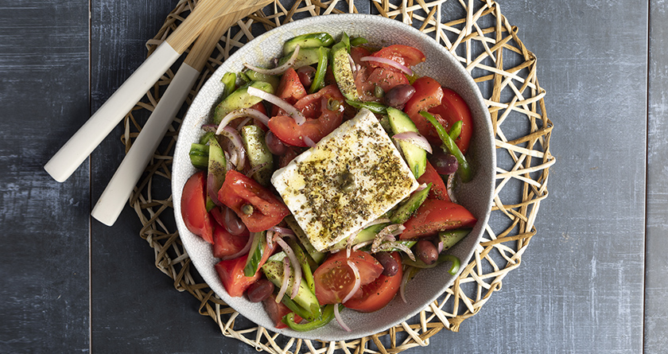

Greek salad

This greek salad will cure your sadness
Ingredients
- 2 tomatoes
- 3 tablespoons red wine vinegar
- 1 tablespoon honey
- salt
- 1 cucumber, small
- 1/2 green bell pepper
- 1/2 red onion
- 20g capers
- 50g olives
- 150g feta
- pepper
- oregano
- 4 tablespoons olive oil
Let's get down to business
- Cut the tomatoes in half and remove the stem. Cut them in small pieces and place them in a bowl. Add sald and put aside
- In another bowl mix the honey with 2 tablespoons of red wine vinegar, until the honey melts. Then add to the tomatoes
- Cut the cucumber in half and remove the middle. Chop in half-moon shape and add to the tomatoes
- Cut the pepper in small strips and add to the rest of the vegetables
- Cut the onion into really thin slices and add it to a bowl. Add 1 tablespoon of red wine vinegar and mix it. Add it to the rest
- Add the capers, the olives, the feta, pepper, oregano and olive oil and serve
- GET SOME BREAD TO DIP